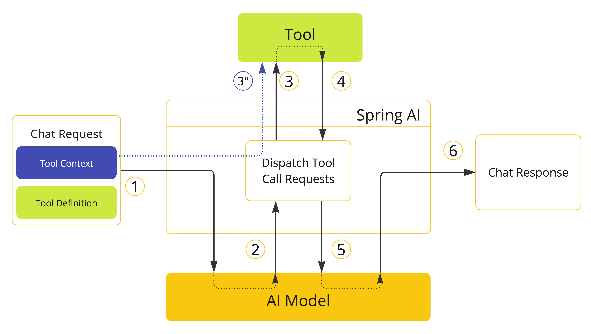
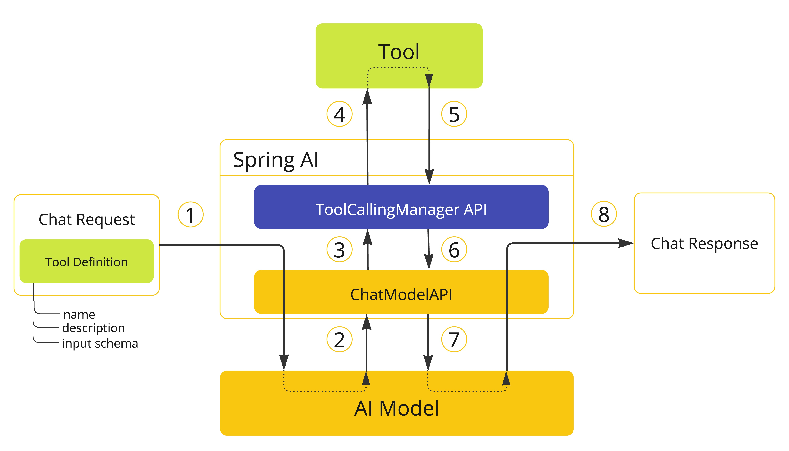

工具调用 #
工具调用 （也称为函数调用 ）是 AI 应用程序中的一种常见模式，允许模型与一组 API 或工具进行交互，从而增强其功能。
工具主要用于：
- 信息检索 。此类工具可用于从外部来源（例如数据库、Web 服务、文件系统或 Web 搜索引擎）检索信息。其目标是增强模型的知识，使其能够回答原本无法回答的问题。因此，它们可用于检索增强生成 (RAG) 场景。例如，可以使用工具检索给定位置的当前天气、检索最新新闻文章或查询数据库中的特定记录。
- 采取行动 。此类别中的工具可用于在软件系统中采取行动，例如发送电子邮件、在数据库中创建新记录、提交表单或触发工作流。其目标是自动化原本需要人工干预或明确编程的任务。例如，可以使用工具为与聊天机器人交互的客户预订航班、在网页上填写表单，或在代码生成场景中基于自动化测试 (TDD) 实现 Java 类。
尽管我们通常将工具调用称为模型功能，但实际上工具调用逻辑是由客户端应用程序提供的。模型只能请求工具调用并提供输入参数，而应用程序负责根据输入参数执行工具调用并返回结果。模型永远无法访问任何作为工具提供的 API，这是一个至关重要的安全考虑因素。
Spring AI 提供了便捷的 API 来定义工具、解析来自模型的工具调用请求以及执行工具调用。以下部分概述了 Spring AI 中的工具调用功能。
快速入门 #
让我们看看如何在 Spring AI 中开始使用工具调用。我们将实现两个简单的工具：一个用于信息检索，一个用于执行操作。信息检索工具将用于获取用户时区的当前日期和时间。操作工具将用于设置指定时间的闹钟。
信息检索 #
AI 模型无法访问实时信息。任何假设模型能够感知当前日期或天气预报等信息的问题都无法由模型回答。不过，我们可以提供一个工具来检索这些信息，并让模型在需要访问实时信息时调用此工具。
让我们在 DateTimeTools 类中实现一个工具，用于获取用户时区的当前日期和时间。该工具不接受任何参数。Spring 框架中的 LocaleContextHolder 可以提供用户的时区信息。该工具将被定义为一个带有 @Tool 注解的方法。为了帮助模型理解是否以及何时调用此工具，我们将提供该工具功能的详细描述。
import java.time.LocalDateTime;
import org.springframework.ai.tool.annotation.Tool;
import org.springframework.context.i18n.LocaleContextHolder;
class DateTimeTools {
@Tool(description = "Get the current date and time in the user's timezone")
String getCurrentDateTime() {
return LocalDateTime.now().atZone(LocaleContextHolder.getTimeZone().toZoneId()).toString();
}
}
接下来，让我们将该工具提供给模型。在本例中，我们将使用 ChatClient 与模型交互。我们将通过 tools() 方法传递一个 DateTimeTools 实例，将该工具提供给模型。当模型需要获取当前日期和时间时，它会请求调用该工具。在内部， ChatClient 将调用该工具并将结果返回给模型，然后模型将使用工具调用结果生成对原始问题的最终响应。
ChatModel chatModel = ...
String response = ChatClient.create(chatModel)
.prompt("What day is tomorrow?")
.tools(new DateTimeTools())
.call()
.content();
System.out.println(response);
输出将是类似这样的：
Tomorrow is 2015-10-21.
您可以重试再次提出相同的问题。这次，不要向模型提供该工具。输出将类似于：
I am an AI and do not have access to real-time information. Please provide the current date so I can accurately determine what day tomorrow will be.
如果没有该工具，模型就不知道如何回答问题，因为它没有能力确定当前的日期和时间。
采取行动 #
AI 模型可以用来生成实现特定目标的计划。例如，一个模型可以生成预订丹麦之旅的计划。然而，该模型并不具备执行该计划的能力。这时，工具就派上用场了：它们可以用来执行模型生成的计划。
在上一个示例中，我们使用了一个工具来确定当前日期和时间。在本例中，我们将定义第二个工具，用于在特定时间设置闹钟。目标是设置从现在起 10 分钟后的闹钟，因此我们需要向模型提供这两个工具来完成此任务。
我们将新工具添加到与之前相同的 DateTimeTools 类中。新工具将接受一个参数，即 ISO-8601 格式的时间。然后，该工具将向控制台打印一条消息，指示已为指定时间设置闹钟。与之前一样，该工具被定义为带有 @Tool 注解的方法，我们也使用 @Tool 注解来提供详细描述，以帮助模型了解何时以及如何使用该工具。
import java.time.LocalDateTime;
import java.time.format.DateTimeFormatter;
import org.springframework.ai.tool.annotation.Tool;
import org.springframework.context.i18n.LocaleContextHolder;
class DateTimeTools {
@Tool(description = "Get the current date and time in the user's timezone")
String getCurrentDateTime() {
return LocalDateTime.now().atZone(LocaleContextHolder.getTimeZone().toZoneId()).toString();
}
@Tool(description = "Set a user alarm for the given time, provided in ISO-8601 format")
void setAlarm(String time) {
LocalDateTime alarmTime = LocalDateTime.parse(time, DateTimeFormatter.ISO_DATE_TIME);
System.out.println("Alarm set for " + alarmTime);
}
}
接下来，让我们将这两个工具都提供给模型。我们将使用 ChatClient 与模型交互。我们将通过 tools() 方法传递一个 DateTimeTools 实例，将这两个工具提供给模型。当我们要求设置 10 分钟后的闹钟时，模型首先需要知道当前的日期和时间。然后，它将使用当前日期和时间计算闹钟时间。最后，它将使用闹钟工具设置闹钟。在内部， ChatClient 将处理来自模型的任何工具调用请求，并将任何工具调用的执行结果返回给它，以便模型可以生成最终的响应。
ChatModel chatModel = ...
String response = ChatClient.create(chatModel)
.prompt("Can you set an alarm 10 minutes from now?")
.tools(new DateTimeTools())
.call()
.content();
System.out.println(response);
在应用程序日志中，您可以检查闹钟是否已在正确的时间设置。
概述 #
Spring AI 通过一组灵活的抽象来支持工具调用，这些抽象允许您以一致的方式定义、解析和执行工具。本节概述了 Spring AI 中工具调用的主要概念和组件。

工具是工具调用的基石，它们由 ToolCallback 接口建模。Spring AI 内置了从方法和函数指定 ToolCallback 的支持，但您也可以定义自己的 ToolCallback 实现来支持更多用例。
ChatModel 实现透明地将工具调用请求分发给相应的 ToolCallback 实现，并将工具调用结果返回给模型，最终由模型生成响应。ChatModel 使用 ToolCallingManager 接口来实现上述操作，该接口负责管理工具执行的生命周期。
ChatClient 和 ChatModel 都接受 ToolCallback 对象列表，以使工具可供模型和最终将执行它们的 ToolCallingManager 使用。
除了直接传递 ToolCallback 对象之外，您还可以传递工具名称列表，该列表将使用 ToolCallbackResolver 接口动态解析。
以下部分将详细介绍所有这些概念和 API，包括如何自定义和扩展它们以支持更多用例。
方法作为工具 #
Spring AI 提供了内置支持，以两种方式从方法中指定工具（即 ToolCallback ：）：
- 声明式地使用 @Tool 注释
- 以编程方式，使用低级 MethodToolCallback 实现。
声明式规范： @Tool #
您可以通过使用 @Tool 注释将方法转变为工具。
class DateTimeTools {
@Tool(description = "Get the current date and time in the user's timezone")
String getCurrentDateTime() {
return LocalDateTime.now().atZone(LocaleContextHolder.getTimeZone().toZoneId()).toString();
}
}
@Tool 注释允许您提供有关该工具的关键信息：
- name ：工具的名称。如果未提供，则使用方法名称。AI 模型使用此名称来识别调用该工具的工具。因此，同一个类中不允许有两个同名的工具。对于特定的聊天请求，该名称在模型可用的所有工具中必须是唯一的。
- description ：工具的描述，模型可以通过它来了解何时以及如何调用该工具。如果未提供，则方法名称将用作工具描述。但是，强烈建议提供详细的描述，因为这对于模型理解工具的用途及其使用方法至关重要。如果描述不充分，可能会导致模型在应该使用工具时不使用它，或者错误地使用它。
- returnDirect ：工具结果是否应直接返回给客户端或传递回模型。有关更多详细信息，请参阅 “直接返回” 。
- resultConverter ： ToolCallResultConverter 实现，用于将工具调用的结果转换为 String object ，并发送回 AI 模型。更多详情，请参阅结果转换 。
方法可以是静态的，也可以是实例的，并且可以具有任意可见性（公共、受保护、包级私有或私有）。包含该方法的类可以是顶级类或嵌套类，也可以具有任意可见性（只要它在你计划实例化它的地方可以访问）。
您可以为该方法定义任意数量的参数（包括无参数），并且支持大多数类型（基元、POJO、枚举、列表、数组、映射等）。同样，该方法可以返回大多数类型，包括 void 。如果该方法返回值，则返回类型必须是可序列化类型，因为结果将被序列化并发送回模型。
Spring AI 会自动为带有 @Tool 注解的方法的输入参数生成 JSON 模式。模型会使用该模式来了解如何调用工具并准备工具请求。 @ToolParam 注解可用于提供有关输入参数的附加信息，例如描述或参数是必需的还是可选的。默认情况下，所有输入参数都被视为必需的。
import java.time.LocalDateTime;
import java.time.format.DateTimeFormatter;
import org.springframework.ai.tool.annotation.Tool;
import org.springframework.ai.tool.annotation.ToolParam;
class DateTimeTools {
@Tool(description = "Set a user alarm for the given time")
void setAlarm(@ToolParam(description = "Time in ISO-8601 format") String time) {
LocalDateTime alarmTime = LocalDateTime.parse(time, DateTimeFormatter.ISO_DATE_TIME);
System.out.println("Alarm set for " + alarmTime);
}
}
@ToolParam 注释允许您提供有关工具参数的关键信息：
- description ：参数的描述，模型可以通过它来更好地理解如何使用参数。例如，参数应该采用什么格式、允许使用哪些值等等。
- required ：该参数是必需的还是可选的。默认情况下，所有参数都被视为必需的。
如果参数被注释为 @Nullable ，它将被视为可选，除非使用 @ToolParam 注释明确标记为必需。
除了 @ToolParam 注解之外，您还可以使用 Swagger 的 @Schema 注解或 Jackson 的 @JsonProperty 注解。更多详情，请参阅 [
JSON Schema](#_json_schema) 。
向 ChatClient 添加工具 #
使用声明式规范方法时，您可以在调用 ChatClient 时将工具类实例传递给 tools() 方法。此类工具仅适用于添加它们的特定聊天请求。
ChatClient.create(chatModel)
.prompt("What day is tomorrow?")
.tools(new DateTimeTools())
.call()
.content();
在底层， ChatClient 会根据工具类实例中每个带有 @Tool 注解的方法生成一个 ToolCallback ，并将其传递给模型。如果您希望自行生成 ToolCallback ，可以使用 ToolCallbacks 实用程序类。
ToolCallback[] dateTimeTools = ToolCallbacks.from(new DateTimeTools());
向 ChatClient 添加默认工具 #
使用声明式规范方法时，您可以通过将工具类实例传递给 defaultTools() 方法，向 ChatClient.Builder 添加默认工具。如果同时提供了默认工具和运行时工具，则运行时工具将完全覆盖默认工具。
ChatModel chatModel = ...
ChatClient chatClient = ChatClient.builder(chatModel)
.defaultTools(new DateTimeTools())
.build();
向 ChatModel 添加工具 #
使用声明式规范方法时，您可以将工具类实例传递给 ToolCallingChatOptions 的 toolCallbacks() 方法，用于调用 ChatModel 。此类工具仅适用于添加它们的特定聊天请求。
ChatModel chatModel = ...
ToolCallback[] dateTimeTools = ToolCallbacks.from(new DateTimeTools());
ChatOptions chatOptions = ToolCallingChatOptions.builder()
.toolCallbacks(dateTimeTools)
.build();
Prompt prompt = new Prompt("What day is tomorrow?", chatOptions);
chatModel.call(prompt);
向 ChatModel 添加默认工具 #
使用声明式规范方法时，您可以在构造时将工具类实例传递给用于创建 ChatModel 的 ToolCallingChatOptions 实例的 toolCallbacks() 方法，从而向 ChatModel 添加默认工具。如果同时提供了默认工具和运行时工具，则运行时工具将完全覆盖默认工具。
ToolCallback[] dateTimeTools = ToolCallbacks.from(new DateTimeTools());
ChatModel chatModel = OllamaChatModel.builder()
.ollamaApi(OllamaApi.builder().build())
.defaultOptions(ToolCallingChatOptions.builder()
.toolCallbacks(dateTimeTools)
.build())
.build();
程序规范： MethodToolCallback #
您可以通过以编程方式构建 MethodToolCallback 将方法转变为工具。
class DateTimeTools {
String getCurrentDateTime() {
return LocalDateTime.now().atZone(LocaleContextHolder.getTimeZone().toZoneId()).toString();
}
}
```MethodToolCallback.Builder` 允许您构建 MethodToolCallback`` 实例并提供有关该工具的关键信息：
- toolDefinition ：定义工具名称、描述和输入架构的 ToolDefinition 实例。您可以使用 ToolDefinition.Builder 类构建它。必需。
- toolMetadata ： ToolMetadata 实例，用于定义其他设置，例如是否应将结果直接返回给客户端，以及要使用的结果转换器。您可以使用 ToolMetadata.Builder 类来构建它。
- toolMethod ：表示工具方法的 Method 实例。必需。
- toolObject ：包含工具方法的对象实例。如果方法是静态的，则可以省略此参数。
- toolCallResultConverter ：用于将工具调用结果转换为 String 对象并发送回 AI 模型的 ToolCallResultConverter 实例。如果未提供，则将使用默认转换器 ( DefaultToolCallResultConverter )。
```ToolDefinition.Builder` 允许您构建 ToolDefinition`` 实例并定义工具名称、描述和输入模式：
- name ：工具的名称。如果未提供，则使用方法名称。AI 模型使用此名称来识别调用该工具的工具。因此，同一个类中不允许有两个同名的工具。对于特定的聊天请求，该名称在模型可用的所有工具中必须是唯一的。
- description ：工具的描述，模型可以通过它来了解何时以及如何调用该工具。如果未提供，则方法名称将用作工具描述。但是，强烈建议提供详细的描述，因为这对于模型理解工具的用途及其使用方法至关重要。如果描述不充分，可能会导致模型在应该使用工具时不使用它，或者错误地使用它。
- inputSchema ：工具输入参数的 JSON 架构。如果未提供，系统将根据方法参数自动生成架构。您可以使用 @ToolParam 注解提供有关输入参数的其他信息，例如描述或参数是必需还是可选。默认情况下，所有输入参数都被视为必需。有关更多详细信息，请参阅 JSON 架构 。
```ToolMetadata.Builder` 允许您构建 ToolMetadata`` 实例并为该工具定义其他设置：
- returnDirect ：工具结果是否应直接返回给客户端或传递回模型。有关更多详细信息，请参阅 “直接返回” 。
Method method = ReflectionUtils.findMethod(DateTimeTools.class, "getCurrentDateTime");
ToolCallback toolCallback = MethodToolCallback.builder()
.toolDefinition(ToolDefinition.builder(method)
.description("Get the current date and time in the user's timezone")
.build())
.toolMethod(method)
.toolObject(new DateTimeTools())
.build();
方法可以是静态的，也可以是实例的，并且可以具有任意可见性（公共、受保护、包级私有或私有）。包含该方法的类可以是顶级类或嵌套类，也可以具有任意可见性（只要它在你计划实例化它的地方可以访问）。
您可以为该方法定义任意数量的参数（包括无参数），并且支持大多数类型（基元、POJO、枚举、列表、数组、映射等）。同样，该方法可以返回大多数类型，包括 void 。如果该方法返回值，则返回类型必须是可序列化类型，因为结果将被序列化并发送回模型。
如果该方法是静态的，则可以省略 toolObject() 方法，因为它不是必需的。
class DateTimeTools {
static String getCurrentDateTime() {
return LocalDateTime.now().atZone(LocaleContextHolder.getTimeZone().toZoneId()).toString();
}
}
Method method = ReflectionUtils.findMethod(DateTimeTools.class, "getCurrentDateTime");
ToolCallback toolCallback = MethodToolCallback.builder()
.toolDefinition(ToolDefinition.builder(method)
.description("Get the current date and time in the user's timezone")
.build())
.toolMethod(method)
.build();
Spring AI 将自动为该方法的输入参数生成 JSON 模式。模型将使用该模式来了解如何调用工具并准备工具请求。 @ToolParam 注解可用于提供有关输入参数的附加信息，例如描述或参数是必需的还是可选的。默认情况下，所有输入参数都被视为必需的。
import java.time.LocalDateTime;
import java.time.format.DateTimeFormatter;
import org.springframework.ai.tool.annotation.ToolParam;
class DateTimeTools {
void setAlarm(@ToolParam(description = "Time in ISO-8601 format") String time) {
LocalDateTime alarmTime = LocalDateTime.parse(time, DateTimeFormatter.ISO_DATE_TIME);
System.out.println("Alarm set for " + alarmTime);
}
}
@ToolParam 注释允许您提供有关工具参数的关键信息：
- description ：参数的描述，模型可以通过它来更好地理解如何使用参数。例如，参数应该采用什么格式、允许使用哪些值等等。
- required ：该参数是必需的还是可选的。默认情况下，所有参数都被视为必需的。
如果参数被注释为 @Nullable ，它将被视为可选，除非使用 @ToolParam 注释明确标记为必需。
除了 @ToolParam 注解之外，您还可以使用 Swagger 的 @Schema 注解或 Jackson 的 @JsonProperty 注解。更多详情，请参阅 [
JSON Schema](#_json_schema) 。
向 ChatClient 和 ChatModel 添加工具 #
使用编程规范方法时，您可以将 MethodToolCallback 实例传递给 ChatClient 的 tools() 方法。该工具仅适用于其所添加到的特定聊天请求。
ToolCallback toolCallback = ...
ChatClient.create(chatModel)
.prompt("What day is tomorrow?")
.tools(toolCallback)
.call()
.content();
向 ChatClient 添加默认工具 #
使用编程式规范方法时，您可以通过将 MethodToolCallback 实例传递给 defaultTools() 方法，将默认工具添加到 ChatClient.Builder 。如果同时提供了默认工具和运行时工具，则运行时工具将完全覆盖默认工具。
ChatModel chatModel = ...
ToolCallback toolCallback = ...
ChatClient chatClient = ChatClient.builder(chatModel)
.defaultTools(toolCallback)
.build();
向 ChatModel 添加工具 #
使用编程式规范方法时，您可以将 MethodToolCallback 实例传递给 ToolCallingChatOptions 的 toolCallbacks() 方法，用于调用 ChatModel 。该工具仅适用于其所添加到的特定聊天请求。
ChatModel chatModel = ...
ToolCallback toolCallback = ...
ChatOptions chatOptions = ToolCallingChatOptions.builder()
.toolCallbacks(toolCallback)
.build():
Prompt prompt = new Prompt("What day is tomorrow?", chatOptions);
chatModel.call(prompt);
向 ChatModel 添加默认工具 #
使用编程式规范方法时，您可以在构造时将 MethodToolCallback 实例传递给用于创建 ChatModel 的 ToolCallingChatOptions 实例的 toolCallbacks() 方法，从而向 ChatModel 添加默认工具。如果同时提供了默认工具和运行时工具，则运行时工具将完全覆盖默认工具。
ToolCallback toolCallback = ...
ChatModel chatModel = OllamaChatModel.builder()
.ollamaApi(OllamaApi.builder().build())
.defaultOptions(ToolCallingChatOptions.builder()
.toolCallbacks(toolCallback)
.build())
.build();
方法工具限制 #
以下类型目前不支持作为工具使用的方法的参数或返回类型：
- 异步类型（例如 CompletableFuture 、 Future ）
- 反应类型（例如 Flow 、 Mono 、 Flux ）
- 功能类型（例如 Function 、 Supplier 、 Consumer ）。
使用基于函数的工具规范方法支持函数类型。有关更多详细信息，请参阅 [ “函数作为工具”](#_functions_as_tools) 。
函数作为工具 #
Spring AI 提供了对从函数指定工具的内置支持，可以通过编程方式使用低级 FunctionToolCallback 实现，也可以通过运行时解析的 @Bean 动态指定。
程序规范： FunctionToolCallback #
您可以通过以编程方式构建 FunctionToolCallback 将功能类型（ Function 、 Supplier 、 Consumer 或 BiFunction ）转变为工具。
public class WeatherService implements Function<WeatherRequest, WeatherResponse> {
public WeatherResponse apply(WeatherRequest request) {
return new WeatherResponse(30.0, Unit.C);
}
}
public enum Unit { C, F }
public record WeatherRequest(String location, Unit unit) {}
public record WeatherResponse(double temp, Unit unit) {}
```FunctionToolCallback.Builder` 允许您构建 FunctionToolCallback`` 实例并提供有关该工具的关键信息：
- name ：工具的名称。AI 模型使用此名称来识别调用该工具的工具。因此，同一上下文中不允许存在两个同名的工具。对于特定聊天请求，该名称在模型可用的所有工具中必须是唯一的。必填。
- toolFunction ：表示工具方法（ Function 、 Supplier 、 Consumer 或 BiFunction ）的函数对象。必需。
- description ：工具的描述，模型可以通过它来了解何时以及如何调用该工具。如果未提供，则方法名称将用作工具描述。但是，强烈建议提供详细的描述，因为这对于模型理解工具的用途及其使用方法至关重要。如果描述不充分，可能会导致模型在应该使用工具时不使用它，或者错误地使用它。
- inputType ：函数输入的类型。必需。
- inputSchema ：工具输入参数的 JSON 架构。如果未提供，系统将根据 inputType 自动生成架构。您可以使用 @ToolParam 注解提供有关输入参数的其他信息，例如描述或参数是必需还是可选。默认情况下，所有输入参数都被视为必需。有关更多详细信息，请参阅 JSON 架构 。
- toolMetadata ： ToolMetadata 实例，用于定义其他设置，例如是否应将结果直接返回给客户端，以及要使用的结果转换器。您可以使用 ToolMetadata.Builder 类来构建它。
- toolCallResultConverter ：用于将工具调用结果转换为 String 对象并发送回 AI 模型的 ToolCallResultConverter 实例。如果未提供，则将使用默认转换器 ( DefaultToolCallResultConverter )。
```ToolMetadata.Builder` 允许您构建 ToolMetadata`` 实例并为该工具定义其他设置：
- returnDirect ：工具结果是否应直接返回给客户端或传递回模型。有关更多详细信息，请参阅 “直接返回” 。
ToolCallback toolCallback = FunctionToolCallback
.builder("currentWeather", new WeatherService())
.description("Get the weather in location")
.inputType(WeatherRequest.class)
.build();
函数的输入和输出可以是 Void 或 POJO。输入和输出 POJO 必须是可序列化的，因为结果将被序列化并发送回模型。函数以及输入和输出类型必须是公共的。
向 ChatClient 添加工具 #
使用编程规范方法时，您可以将 FunctionToolCallback 实例传递给 ChatClient 的 tools() 方法。该工具仅适用于其所添加到的特定聊天请求。
ToolCallback toolCallback = ...
ChatClient.create(chatModel)
.prompt("What's the weather like in Copenhagen?")
.tools(toolCallback)
.call()
.content();
向 ChatClient 添加默认工具 #
使用编程式规范方法时，您可以通过将 FunctionToolCallback 实例传递给 defaultTools() 方法，将默认工具添加到 ChatClient.Builder 。如果同时提供了默认工具和运行时工具，则运行时工具将完全覆盖默认工具。
ChatModel chatModel = ...
ToolCallback toolCallback = ...
ChatClient chatClient = ChatClient.builder(chatModel)
.defaultTools(toolCallback)
.build();
向 ChatModel 添加工具 #
使用编程规范方法时，您可以将 FunctionToolCallback 实例传递给 ToolCallingChatOptions 的 toolCallbacks() 方法。该工具仅适用于其所添加到的特定聊天请求。
ChatModel chatModel = ...
ToolCallback toolCallback = ...
ChatOptions chatOptions = ToolCallingChatOptions.builder()
.toolCallbacks(toolCallback)
.build():
Prompt prompt = new Prompt("What's the weather like in Copenhagen?", chatOptions);
chatModel.call(prompt);
向 ChatModel 添加默认工具 #
使用编程式规范方法时，您可以在构造时将 FunctionToolCallback 实例传递给用于创建 ChatModel 的 ToolCallingChatOptions 实例的 toolCallbacks() 方法，从而将默认工具添加到 ChatModel 中。如果同时提供了默认工具和运行时工具，则运行时工具将完全覆盖默认工具。
ToolCallback toolCallback = ...
ChatModel chatModel = OllamaChatModel.builder()
.ollamaApi(OllamaApi.builder().build())
.defaultOptions(ToolCallingChatOptions.builder()
.toolCallbacks(toolCallback)
.build())
.build();
动态规范： @Bean #
您不必以编程方式指定工具，而是可以将工具定义为 Spring bean，并让 Spring AI 在运行时使用 ToolCallbackResolver 接口（通过 SpringBeanToolCallbackResolver 实现）动态解析它们。此选项使您可以使用任何 Function 、 Supplier 、 Consumer 或 BiFunction bean 作为工具。bean 名称将用作工具名称，Spring Framework 中的 @Description 注释可用于提供工具的描述，模型使用这些信息来了解何时以及如何调用该工具。如果您不提供描述，则方法名称将用作工具描述。但是，强烈建议提供详细的描述，因为这对于模型理解工具的用途及其使用方法至关重要。如果无法提供良好的描述，则可能导致模型在应该使用工具时不使用它或错误地使用它。
@Configuration(proxyBeanMethods = false)
class WeatherTools {
WeatherService weatherService = new WeatherService();
@Bean
@Description("Get the weather in location")
Function<WeatherRequest, WeatherResponse> currentWeather() {
return weatherService;
}
}
工具输入参数的 [
JSON 架构](#_json_schema)将自动生成。您可以使用 @ToolParam 注解提供有关输入参数的其他信息，例如描述或参数是必需的还是可选的。默认情况下，所有输入参数都被视为必需的。有关更多详细信息，请参阅 [
JSON 架构](#_json_schema) 。
record WeatherRequest(@ToolParam(description = "The name of a city or a country") String location, Unit unit) {}
这种工具指定方法的缺点是无法保证类型安全，因为工具解析是在运行时完成的。为了缓解这个问题，您可以使用 @Bean 注解显式指定工具名称，并将值存储在常量中，这样您就可以在聊天请求中使用它，而不必对工具名称进行硬编码。
@Configuration(proxyBeanMethods = false)
class WeatherTools {
public static final String CURRENT_WEATHER_TOOL = "currentWeather";
@Bean(CURRENT_WEATHER_TOOL)
@Description("Get the weather in location")
Function<WeatherRequest, WeatherResponse> currentWeather() {
...
}
}
向 ChatClient 添加工具 #
使用动态规范方法时，您可以将工具名称（即函数 bean 名称）传递给 ChatClient 的 tools() 方法。该工具仅适用于其所添加到的特定聊天请求。
ChatClient.create(chatModel)
.prompt("What's the weather like in Copenhagen?")
.tools("currentWeather")
.call()
.content();
向 ChatClient 添加默认工具 #
使用动态规范方法时，您可以通过将工具名称传递给 defaultTools() 方法，将默认工具添加到 ChatClient.Builder 。如果同时提供了默认工具和运行时工具，则运行时工具将完全覆盖默认工具。
ChatModel chatModel = ...
ChatClient chatClient = ChatClient.builder(chatModel)
.defaultTools("currentWeather")
.build();
向 ChatModel 添加工具 #
使用动态规范方法时，您可以将工具名称传递给用于调用 ChatModel 的 ToolCallingChatOptions 的 toolNames() 方法。该工具仅适用于添加到的特定聊天请求。
ChatModel chatModel = ...
ChatOptions chatOptions = ToolCallingChatOptions.builder()
.toolNames("currentWeather")
.build():
Prompt prompt = new Prompt("What's the weather like in Copenhagen?", chatOptions);
chatModel.call(prompt);
向 ChatModel 添加默认工具 #
使用动态规范方法时，您可以在构造时将默认工具添加到 ChatModel 中，只需将工具名称传递给用于创建 ChatModel ToolCallingChatOptions 实例的 toolNames() 方法即可。如果同时提供了默认工具和运行时工具，则运行时工具将完全覆盖默认工具。
ChatModel chatModel = OllamaChatModel.builder()
.ollamaApi(OllamaApi.builder().build())
.defaultOptions(ToolCallingChatOptions.builder()
.toolNames("currentWeather")
.build())
.build();
函数工具限制 #
对于用作工具的函数，当前不支持以下类型作为输入或输出类型：
- 原始类型
- 集合类型（例如 List 、 Map 、 Array 、 Set ）
- 异步类型（例如 CompletableFuture 、 Future ）
- 反应类型（例如 Flow 、 Mono 、 Flux ）。
使用基于方法的工具规范方法支持原始类型和集合。有关更多详细信息，请参阅 [ “方法即工具”](#_methods_as_tools) 。
工具规格 #
在 Spring AI 中，工具通过 ToolCallback 接口建模。在前面的部分中，我们了解了如何使用 Spring AI 提供的内置支持，通过方法和函数定义工具（请参阅[
方法即工具](#_methods_as_tools)和[
函数即工具](#_functions_as_tools) ）。本节将深入探讨工具规范，以及如何自定义和扩展它以支持更多用例。
工具回调 #
ToolCallback 接口提供了一种定义可由 AI 模型调用的工具的方法，包括定义和执行逻辑。当您想从头定义工具时，它是主要实现的接口。例如，您可以从 MCP 客户端（使用模型上下文协议）或 ChatClient （用于构建模块化代理应用程序）定义 ToolCallback 。
该接口提供以下方法：
public interface ToolCallback {
/**
* Definition used by the AI model to determine when and how to call the tool.
*/
ToolDefinition getToolDefinition();
/**
* Metadata providing additional information on how to handle the tool.
*/
ToolMetadata getToolMetadata();
/**
* Execute tool with the given input and return the result to send back to the AI model.
*/
String call(String toolInput);
/**
* Execute tool with the given input and context, and return the result to send back to the AI model.
*/
String call(String toolInput, ToolContext tooContext);
}
Spring AI 为工具方法（ MethodToolCallback ）和工具函数（ FunctionToolCallback ）提供了内置实现。
工具定义 #
ToolDefinition 接口提供了 AI 模型了解工具可用性所需的信息，包括工具名称、描述和输入模式。每个 ToolCallback 实现都必须提供一个 ToolDefinition 实例来定义该工具。
该接口提供以下方法：
public interface ToolDefinition {
/**
* The tool name. Unique within the tool set provided to a model.
*/
String name();
/**
* The tool description, used by the AI model to determine what the tool does.
*/
String description();
/**
* The schema of the parameters used to call the tool.
*/
String inputSchema();
}
```ToolDefinition.Builder` 允许您使用默认实现（ DefaultToolDefinition）构建ToolDefinition`` 实例。
ToolDefinition toolDefinition = ToolDefinition.builder()
.name("currentWeather")
.description("Get the weather in location")
.inputSchema("""
{
"type": "object",
"properties": {
"location": {
"type": "string"
},
"unit": {
"type": "string",
"enum": ["C", "F"]
}
},
"required": ["location", "unit"]
}
""")
.build();
方法工具定义 #
从方法构建工具时，系统会自动生成 ToolDefinition 。如果您希望自行生成 ToolDefinition ，可以使用这个便捷的构建器。
Method method = ReflectionUtils.findMethod(DateTimeTools.class, "getCurrentDateTime");
ToolDefinition toolDefinition = ToolDefinition.from(method);
从方法生成的 ToolDefinition 包含方法名称（作为工具名称）、方法名称（作为工具描述）以及方法输入参数的 JSON 架构。如果方法带有 @Tool 注解，则工具名称和描述将从注解中获取（如果已设置）。
如果您希望明确提供部分或全部属性，则可以使用 ```ToolDefinition.Builder` 来构建自定义 ToolDefinition`` 实例。
Method method = ReflectionUtils.findMethod(DateTimeTools.class, "getCurrentDateTime");
ToolDefinition toolDefinition = ToolDefinition.builder(method)
.name("currentDateTime")
.description("Get the current date and time in the user's timezone")
.inputSchema(JsonSchemaGenerator.generateForMethodInput(method))
.build();
功能工具定义 #
从函数构建工具时，系统会自动生成 ToolDefinition 。使用 ```FunctionToolCallback.Builder` 构建 FunctionToolCallback`` 实例时，您可以提供用于生成 ToolDefinition 工具名称、描述和输入架构。更多详情，请参阅 [
“函数即工具”](#_functions_as_tools) 。
JSON 模式 #
在向 AI 模型提供工具时，模型需要了解用于调用该工具的输入类型的模式。该模式用于了解如何调用该工具并准备工具请求。Spring AI 通过 JsonSchemaGenerator 类内置了为工具生成输入类型的 JSON 模式的支持。该模式作为 ToolDefinition 的一部分提供。
JsonSchemaGenerator 类在底层用于为方法或函数的输入参数生成 JSON 模式，可以使用 [
“方法即工具”](#_methods_as_tools) 和 [
“函数即工具”](#_functions_as_tools) 中描述的任何策略。JSON 模式生成逻辑支持一系列注解，您可以在方法和函数的输入参数上使用这些注解来自定义生成的模式。
本节介绍在为工具的输入参数生成 JSON 模式时可以自定义的两个主要选项：描述和所需状态。
描述 #
除了提供工具本身的描述外，您还可以提供工具输入参数的描述。该描述可用于提供有关输入参数的关键信息，例如参数应采用的格式、允许的值等等。这有助于模型理解输入模式及其使用方法。Spring AI 内置支持使用以下注解之一生成输入参数的描述：
- 来自 Spring AI 的 @ToolParam(description = “…”)
- 来自杰克逊的 @JsonClassDescription(description = “…”)
- 来自杰克逊的 @JsonPropertyDescription(description = “…”)
- 来自 Swagger 的 @Schema(description = “…”) 。
这种方法适用于方法和函数，并且可以递归地将其用于嵌套类型。
import java.time.LocalDateTime;
import java.time.format.DateTimeFormatter;
import org.springframework.ai.tool.annotation.Tool;
import org.springframework.ai.tool.annotation.ToolParam;
import org.springframework.context.i18n.LocaleContextHolder;
class DateTimeTools {
@Tool(description = "Set a user alarm for the given time")
void setAlarm(@ToolParam(description = "Time in ISO-8601 format") String time) {
LocalDateTime alarmTime = LocalDateTime.parse(time, DateTimeFormatter.ISO_DATE_TIME);
System.out.println("Alarm set for " + alarmTime);
}
}
必需/可选 #
默认情况下，每个输入参数都被视为必需参数，这会强制 AI 模型在调用该工具时为其提供一个值。但是，您可以使用以下注释之一（按以下优先顺序）将输入参数设为可选参数：
- Spring AI 中的 @ToolParam(required = false)
- 来自杰克逊的 @JsonProperty(required = false)
- 来自 Swagger 的 @Schema(required = false)
- Spring 框架中的 @Nullable 。
这种方法适用于方法和函数，并且可以递归地将其用于嵌套类型。
class CustomerTools {
@Tool(description = "Update customer information")
void updateCustomerInfo(Long id, String name, @ToolParam(required = false) String email) {
System.out.println("Updated info for customer with id: " + id);
}
}
结果转换 #
工具调用的结果使用 ToolCallResultConverter 进行序列化，然后发送回 AI 模型。ToolCallResultConverter ToolCallResultConverter 提供了一种将工具调用结果转换为 String 对象的方法。
该接口提供以下方法：
@FunctionalInterface
public interface ToolCallResultConverter {
/**
* Given an Object returned by a tool, convert it to a String compatible with the
* given class type.
*/
String convert(@Nullable Object result, @Nullable Type returnType);
}
结果必须是可序列化类型。默认情况下，结果使用 Jackson ( `DefaultToolCallResultConverter``` ) 序列化为 JSON，但您可以通过提供自己的 ToolCallResultConverter`` 实现来自定义序列化过程。
Spring AI 在方法和函数工具中都依赖于 ToolCallResultConverter 。
方法工具调用结果转换 #
当使用声明式方法从方法构建工具时，您可以通过设置 @Tool 注释的 resultConverter() 属性来提供用于该工具的自定义 ToolCallResultConverter 。
class CustomerTools {
@Tool(description = "Retrieve customer information", resultConverter = CustomToolCallResultConverter.class)
Customer getCustomerInfo(Long id) {
return customerRepository.findById(id);
}
}
如果使用编程方法，您可以通过设置 MethodToolCallback.Builder 的 resultConverter() 属性来提供用于该工具的自定义 ToolCallResultConverter 。
请参阅[ 方法作为工具](#_methods_as_tools)以了解更多详细信息。
函数工具调用结果转换 #
当使用编程方法从函数构建工具时，您可以通过设置 FunctionToolCallback.Builder 的 resultConverter() 属性来提供用于该工具的自定义 ToolCallResultConverter 。
请参阅[ 函数作为工具](#_functions_as_tools)以了解更多详细信息。
工具上下文 #
Spring AI 支持通过 ToolContext API 向工具传递额外的上下文信息。此功能允许您提供额外的用户提供数据，这些数据可在工具执行过程中与 AI 模型传递的工具参数一起使用。

class CustomerTools {
@Tool(description = "Retrieve customer information")
Customer getCustomerInfo(Long id, ToolContext toolContext) {
return customerRepository.findById(id, toolContext.get("tenantId"));
}
}
调用 ChatClient 时， ToolContext 会填充用户提供的数据。
ChatModel chatModel = ...
String response = ChatClient.create(chatModel)
.prompt("Tell me more about the customer with ID 42")
.tools(new CustomerTools())
.toolContext(Map.of("tenantId", "acme"))
.call()
.content();
System.out.println(response);
同样，您可以在直接调用 ChatModel 时定义工具上下文数据。
ChatModel chatModel = ...
ToolCallback[] customerTools = ToolCallbacks.from(new CustomerTools());
ChatOptions chatOptions = ToolCallingChatOptions.builder()
.toolCallbacks(customerTools)
.toolContext(Map.of("tenantId", "acme"))
.build();
Prompt prompt = new Prompt("Tell me more about the customer with ID 42", chatOptions);
chatModel.call(prompt);
如果在默认选项和运行时选项中都设置了 toolContext 选项，则生成的 ToolContext 将是两者的合并，其中运行时选项优先于默认选项。
直接退货 #
默认情况下，工具调用的结果会作为响应发送回模型。然后，模型可以使用该结果继续对话。
在某些情况下，您更愿意将结果直接返回给调用者，而不是将其发送回模型。例如，如果您构建了一个依赖于 RAG 工具的代理，您可能希望将结果直接返回给调用者，而不是将其发送回模型进行不必要的后处理。或者，您可能拥有某些工具，应该终止代理的推理循环。
每个 ToolCallback 实现都可以定义工具调用的结果应该直接返回给调用者还是返回给模型。默认情况下，结果会返回给模型。但您可以根据工具更改此行为。
ToolCallingManager 负责管理工具执行生命周期，并负责处理与工具关联的 returnDirect 属性。如果该属性设置为 true ，则工具调用的结果将直接返回给调用者。否则，结果将发送回模型。

方法直接返回 #
当使用声明式方法从方法构建工具时，可以通过将 @Tool 注释的 returnDirect 属性设置为 true 来标记工具将结果直接返回给调用者。
class CustomerTools {
@Tool(description = "Retrieve customer information", returnDirect = true)
Customer getCustomerInfo(Long id) {
return customerRepository.findById(id);
}
}
如果使用编程方法，您可以通过 ToolMetadata 接口设置 returnDirect 属性并将其传递给 MethodToolCallback.Builder 。
ToolMetadata toolMetadata = ToolMetadata.builder()
.returnDirect(true)
.build();
请参阅[ 方法作为工具](#_methods_as_tools)以了解更多详细信息。
函数直接返回 #
当使用编程方法从函数构建工具时，您可以通过 ToolMetadata 接口设置 returnDirect 属性并将其传递给 FunctionToolCallback.Builder 。
ToolMetadata toolMetadata = ToolMetadata.builder()
.returnDirect(true)
.build();
请参阅[ 函数作为工具](#_functions_as_tools)以了解更多详细信息。
工具执行 #
工具执行是使用提供的输入参数调用工具并返回结果的过程。工具执行由 ToolCallingManager 接口处理，该接口负责管理工具执行的生命周期。
public interface ToolCallingManager {
/**
* Resolve the tool definitions from the model's tool calling options.
*/
List<ToolDefinition> resolveToolDefinitions(ToolCallingChatOptions chatOptions);
/**
* Execute the tool calls requested by the model.
*/
ToolExecutionResult executeToolCalls(Prompt prompt, ChatResponse chatResponse);
}
如果您使用任何 Spring AI Spring Boot Starters， `DefaultToolCallingManager````` 是 ToolCallingManager接口的自动配置实现。您可以通过提供自己的ToolCallingManager```` bean 来自定义工具执行行为。
@Bean
ToolCallingManager toolCallingManager() {
return ToolCallingManager.builder().build();
}
默认情况下，Spring AI 会在每个 ChatModel 实现内部透明地管理工具执行生命周期。但您可以选择退出此行为并自行控制工具执行。本节将介绍这两种场景。
框架控制的工具执行 #
使用默认行为时，Spring AI 会自动拦截来自模型的任何工具调用请求，调用该工具并将结果返回给模型。所有这一切都由每个 ChatModel 实现使用 ToolCallingManager 为您透明地完成。

确定工具调用是否有资格执行的逻辑由 ToolExecutionEligibilityPredicate 接口处理。默认情况下，工具执行资格通过检查 ToolCallingChatOptions 的 internalToolExecutionEnabled 属性是否设置为 true （默认值）以及 ChatResponse 是否包含任何工具调用来确定。
public class DefaultToolExecutionEligibilityPredicate implements ToolExecutionEligibilityPredicate {
@Override
public boolean test(ChatOptions promptOptions, ChatResponse chatResponse) {
return ToolCallingChatOptions.isInternalToolExecutionEnabled(promptOptions) && chatResponse != null
&& chatResponse.hasToolCalls();
}
}
您可以在创建 ChatModel bean 时提供 ToolExecutionEligibilityPredicate 的自定义实现。
用户控制的工具执行 #
在某些情况下，您可能希望自行控制工具执行生命周期。您可以将 ToolCallingChatOptions 的 internalToolExecutionEnabled 属性设置为 false 来实现。
当您使用此选项调用 ChatModel 时，工具的执行将委托给调用者，让您完全控制工具执行的生命周期。您负责检查 ChatResponse 中的工具调用，并使用 ToolCallingManager 执行它们。
以下示例演示了用户控制工具执行方法的最小实现：
ChatModel chatModel = ...
ToolCallingManager toolCallingManager = ToolCallingManager.builder().build();
ChatOptions chatOptions = ToolCallingChatOptions.builder()
.toolCallbacks(new CustomerTools())
.internalToolExecutionEnabled(false)
.build();
Prompt prompt = new Prompt("Tell me more about the customer with ID 42", chatOptions);
ChatResponse chatResponse = chatModel.call(prompt);
while (chatResponse.hasToolCalls()) {
ToolExecutionResult toolExecutionResult = toolCallingManager.executeToolCalls(prompt, chatResponse);
prompt = new Prompt(toolExecutionResult.conversationHistory(), chatOptions);
chatResponse = chatModel.call(prompt);
}
System.out.println(chatResponse.getResult().getOutput().getText());
接下来的示例展示了用户控制工具执行方法与 ChatMemory API 结合使用的最小实现：
ToolCallingManager toolCallingManager = DefaultToolCallingManager.builder().build();
ChatMemory chatMemory = MessageWindowChatMemory.builder().build();
String conversationId = UUID.randomUUID().toString();
ChatOptions chatOptions = ToolCallingChatOptions.builder()
.toolCallbacks(ToolCallbacks.from(new MathTools()))
.internalToolExecutionEnabled(false)
.build();
Prompt prompt = new Prompt(
List.of(new SystemMessage("You are a helpful assistant."), new UserMessage("What is 6 * 8?")),
chatOptions);
chatMemory.add(conversationId, prompt.getInstructions());
Prompt promptWithMemory = new Prompt(chatMemory.get(conversationId), chatOptions);
ChatResponse chatResponse = chatModel.call(promptWithMemory);
chatMemory.add(conversationId, chatResponse.getResult().getOutput());
while (chatResponse.hasToolCalls()) {
ToolExecutionResult toolExecutionResult = toolCallingManager.executeToolCalls(promptWithMemory,
chatResponse);
chatMemory.add(conversationId, toolExecutionResult.conversationHistory()
.get(toolExecutionResult.conversationHistory().size() - 1));
promptWithMemory = new Prompt(chatMemory.get(conversationId), chatOptions);
chatResponse = chatModel.call(promptWithMemory);
chatMemory.add(conversationId, chatResponse.getResult().getOutput());
}
UserMessage newUserMessage = new UserMessage("What did I ask you earlier?");
chatMemory.add(conversationId, newUserMessage);
ChatResponse newResponse = chatModel.call(new Prompt(chatMemory.get(conversationId)));
异常处理 #
当工具调用失败时，异常会以 ToolExecutionException 形式传播，您可以捕获该异常来处理错误。 ToolExecutionExceptionProcessor 可用于处理 ToolExecutionException ，并产生两种结果：要么生成一条错误消息并发送回 AI 模型，要么抛出一个异常并由调用方处理。
@FunctionalInterface
public interface ToolExecutionExceptionProcessor {
/**
* Convert an exception thrown by a tool to a String that can be sent back to the AI
* model or throw an exception to be handled by the caller.
*/
String process(ToolExecutionException exception);
}
如果您使用任何 Spring AI Spring Boot Starters，则 Default``ToolExecutionExceptionProcessor``` 是 ``ToolExecutionExceptionProcessor`` 接口的自动配置实现。默认情况下，错误消息会发送回模型。您可以使用 DefaultToolExecutionExceptionProcessor``` 构造函数将 alwaysThrow属性设置为 ````true```` 或false`` 。如果 true ，则会抛出异常，而不是将错误消息发送回模型。
@Bean
ToolExecutionExceptionProcessor toolExecutionExceptionProcessor() {
return new DefaultToolExecutionExceptionProcessor(true);
}
默认 ToolCallingManager ( DefaultToolCallingManager ) 在内部使用 ToolExecutionExceptionProcessor 来处理[
工具执行](#_tool_execution)期间的异常。有关[
工具执行](#_tool_execution)生命周期的更多详细信息，请参阅[
工具执行](#_tool_execution) 。
工具分辨率 #
将工具传递给模型的主要方法是在调用 ChatClient 或 ChatModel 时提供 ToolCallback ，使用[
方法作为工具](#_methods_as_tools)和[
函数作为工具](#_functions_as_tools)中描述的策略之一。
但是，Spring AI 还支持使用 ToolCallbackResolver 接口在运行时动态解析工具。
public interface ToolCallbackResolver {
/**
* Resolve the {@link ToolCallback} for the given tool name.
*/
@Nullable
ToolCallback resolve(String toolName);
}
使用此方法时：
- 在客户端，您向 ChatClient 或 ChatModel 提供工具名称，而不是 ToolCallback 。
- 在服务器端， ToolCallbackResolver 实现负责将工具名称解析为相应的 ToolCallback 实例。
默认情况下，Spring AI 依赖于 `DelegatingToolCallbackResolver``` ，它将工具解析委托给 ToolCallbackResolver`` 实例列表：
- SpringBeanToolCallbackResolver 解析 Function 、 Supplier 、 Consumer 或 BiFunction 类型的 Spring Bean 中的工具。有关更多详细信息，请参阅动态规范： @Bean 。
- StaticToolCallbackResolver 从 ToolCallback 实例的静态列表中解析工具。使用 Spring Boot 自动配置时，此解析器会自动配置应用程序上下文中定义的所有 ToolCallback 类型的 bean。
如果您依赖 Spring Boot 自动配置，则可以通过提供自定义 ToolCallbackResolver bean 来定制解析逻辑。
@Bean
ToolCallbackResolver toolCallbackResolver(List<FunctionCallback> toolCallbacks) {
StaticToolCallbackResolver staticToolCallbackResolver = new StaticToolCallbackResolver(toolCallbacks);
return new DelegatingToolCallbackResolver(List.of(staticToolCallbackResolver));
}
ToolCallbackResolver 由 ToolCallingManager 内部使用，用于在运行时动态解析工具，支持[
框架控制的工具执行](#_framework_controlled_tool_execution)和[
用户控制的工具执行](#_user_controlled_tool_execution) 。
可观察性 #
工具调用包含 spring.ai.tool 观察的可观察性支持，用于测量完成时间并传播跟踪信息。请参阅[ 工具调用可观察性](../observability/index.html#_tool_calling) 。
Spring AI 可以选择将工具调用参数和结果导出为 span 属性，但由于敏感性原因，默认情况下禁用此功能。详情： [ 工具调用参数和结果数据](../observability/index.html#_tool_call_arguments_and_result_data) 。
日志记录 #
工具调用功能的所有主要操作均以 DEBUG 级别记录日志。您可以通过将 org.springframework.ai 包的日志级别设置为 DEBUG 来启用日志记录。